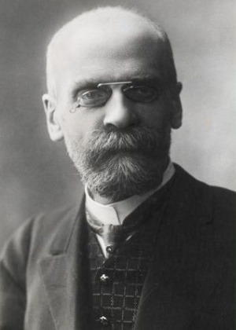

Biologia
Evolução Química (hipótese de Oparin e Haldane);
A origem da vida na Terra é um dos temas mais controversos sem solução
evidente.Por isso, muitos se dedicaram a estudar e tentar explicar como surgiram os seres vivos no planeta.
As principais hipóteses são:
A evolução química é a hipótese mais aceita para a origem da vida no planeta.
Segundo essa hipótese,
associações entre moléculas geraram agrupamentos cada vez mais complexos até que promoveu o surgimento
da vida.
Os autores acreditavam que as condições físicas e químicas da atmosfera primitiva tenham
contribuído com a formação das primeiras moléculas orgânicas, chamadas de
coacervados.
No interior
desses pequenos grupos de moléculas, os coacervados, ocorriam diversas reações químicas, que foram os
tornando mais complexos e estáveis.

Experimento de Miller
Para estudar o surgimento das primeiras moléculas orgânicas, o
químico Stanley Miller realizou um experimento que simullava as condições
da terra primitiva,
tais quais permitiram o surgimento das primeiras moléculas orgânicas.
O cientista utilizou
materiais
que continham elementos que compõem moléculas orgânicas, tais como: oxigênio (O),
carbono (C),
hidrogênio (H) e nitrogênio (N) .
O ambiente continha uma atmosfera
primitiva, ou seja, havia altas
temperaturas e muitas descargas elétricas.
Virus: Vivos ou Não?
Os vírus são organismos que intrigam os cientista devido as suas diversas peculiaridades. Muitos consideram os vírus seres vivos, no entanto, se tratam de organimos sem vida. Os vírus apresentam algumas características que indicam que se tratam de seres não vivos. Uma dessas características é a ausência de células, uma característica presente em todos os seres vivos, segundo a famosa Teoria Celular. Sem células, portanto, os vírus não são seres vivos.
Apesar de apresentar características que comprovavam que o vírus não é um ser vivo, existem características que nos fazem pensar que eles são, sim, uma forma de vida. Uma delas é a presença de um material genético que armazena todas as informações sobre aqueles seres. Eles também têm a capacidade de evoluir, pois frequentemente ocorrem modificações em suas características. Essas mudanças são observadas facilmente quando falamos do vírus da gripe, por exemplo.
Sendo assim, podemos concluir que os vírus apresentam características tanto de seres vivos quanto de seres não vivos. É por isso que ainda não existe um consenso entre todos os pesquisadores quanto à classificação desses organismos.
Taxonomia e a Classificação dos Seres Vivos;
A taxonomia é o ramo da biologia responsável por descrever, identificar e nomear
os seres vivos de acordo
com os critérios estabelecidos, como aspectos morfológicos, genéticos, fisiológicos e reprodutivos.
A
classificação biológica é um sistema utilizado para organizar os seres vivos por meio de critérios
preestabelecidos. A sistemática é uma área que também auxilia nesse processo, já que estuda as relações
evolutivas entre os organismos, sendo cada vez mais utilizada nesse processo, assim como a biologia
molecular.
O físico e botânico sueco Carolus Linnaeus (1707-1778), considerado o
pai da taxonomia moderna, desenvolveu o sistema de nomenclatura binomial, no qual
os organismos são designados de acordo com gênero e espécie.
Como mencionado, Linneu estabeleceu um
sistema hierárquico de táxons, também chamado de categorias hierárquicas, são elas:

Categorias taxonômicas
- Reino: a maior das categorias, é constituída por um conjunto de filos;
- Filo: constituído por um conjunto de classes;
- Classe: constituída por um conjunto de ordens;
- Ordem: constituída por um conjunto de famílias;
- Família: constituída por um conjunto de gêneros;
- Genêro: constituído por um conjunto de espécies;
- Espécie: grupo de organismos capazes de reproduzir-se e originar descendentes férteis.
Classificação em seis reinos
A classificação em seis reinos foi proposta por Woese e diferencia-se da classificação de Whittaker pela extinção do Reino Monera e a criação do Reino Bacteria e do Reino Archea.
Segundo as classificações mais recentes, o Reino Monera e o Reino Protista deixam de existir, sendo apenas utilizados como coletivo para organismos procariontes e eucariontes unicelulares, respectivamente.
Classificação em três domínios
A classificação em três domínios foi também proposta por Woese e é a mais aceita na atualidade.

Sociologia
"Quem foi Émile Durkhein?""
Émile Durkheim foi um psicólogo, filósofo e sociólogo francês do século XIX. Junto a Karl Marx e Max Weber, compõe a tríade dos pensadores clássicos da Sociologia.
Apesar de Auguste Comte ter cunhado o termo Sociologia e estabelecido as necessidades de uma ciência que estudasse a sociedade, foi Durkheim quem formulou as regras do método sociológico e emancipou a Sociologia como uma ciência autônoma. Durkheim também foi o primeiro docente a ocupar uma cátedra de Sociologia em uma universidade.
A Sociologia, enquanto ciência bem estruturada , deve ter um método próprio que garanta que ela não caia nas contradições e na apressadas conclusões do senso comum.
Se existe uma ciência da sociedade com estatuto científico, ela deve partir de um método rigoroso que impeça a interferência tradicional. Os modelos anteriores, como o de Comte, levam o sociólogo a cair em um modelo de dedução metafísica filosófica que, segundo Durkheim, teria mais utilidade para fazer uma filosofia da históriafilosofia da história do que para construir uma ciência da sociedade. O sociólogo deve buscar entender os fatos comuns da sociedade, os fatos sociais, como “coisas” objetivas.
Os fatos sociais são distinguidos pela “sua exterioridade em relação às consciências individuais” e pela “ação coerciva que exerce ou é suscetível de exercer sobre essas mesmas consciênciasiii”. Isso significa dizer que os fatos sociais são maiores que qualquer consciência individual e eles criam o que o sociólogo chamou de consciência coletiva.
Não há, por conta da coercitividade dos fatos sociais, maneira de uma consciência psicológica individual (uma pessoa) agir de livre e espontânea vontade, infringindo as regras sociais, sem que ela não seja acusada ou punida depois, ou não seja, ao menos, incompreendida.
Importantes elementos encontrados nas sociedades que atuam como dados de análise para o sociólogo são as formas de coesão. Essas formas de coesão delineiam o modo como a

História
A Primeira Grande Guerra

- A Primeira Guerra Mundial (1914-1918) foi o resultado dos atritos permanentes provocados pelo imperialismo entre as grandes potências europeias. O conflito durou quatro anos e começou em 28 de julho de 1914 e terminou em 11 de novembro de 1918, com a vitória da Tríplice Entente formada por França, Inglaterra e Estados Unidos. A Grande Guerra, como era denominada antes de acontecer a Segunda Guerra Mundial, foi um conflito em escala global. Começou na Europa, envolveu os território coloniais da África e da Ásia e países da América.
Dois blocos enfrentaram-se: a Tríplice Aliança, formada pela Alemanha, Áustria e Itália, e a Tríplice
Entente formada pela França, Inglaterra e Rússia.
A contenda envolveu 17 países dos cinco continentes como: Alemanha, Brasil, Áustria-Hungria, Estados
Unidos, França, Império Britânico, Império Turco-Otomano, Itália, Japão, Luxemburgo, Países Baixos,
Portugal, Reino da Romênia, Reino da Sérvia, Rússia, Austrália e China.
A guerra deixou 10 milhões
de soldados mortos e outros 21 milhões ficaram feridos. Também 13 milhões de civis perderam a vida.
- A Tríplice Aliança foi uma aliança militar assinada por Alemanha, Áustria-Hungria e Itália em 20 de maio de 1882. Esse acordo foi parte da estratégia dessas três nações, mas sobretudo do governo alemão, para isolar os franceses e os russos no continente europeu. O tratado visava prevenir que o continente europeu se lançasse em guerra.
- A Tríplice Entente foi uma aliança formada pela Inglaterra, Rússia e França a fim de resistir e contestar a Tríplice Aliança. Surgiu no início do século XX, em 1907.

Referências bibliográficas
- ESTEVES, Henrique. Evolução química #1: Perspectivas. Universo Racionalista, 2017. Disponível em: UNIVERSO RACIONALISTA . Acesso em 22 de março de 2023.
- CORAZZA, L.C. EVOLUÇÃO QUÍMICA CÓSMICA: e a relação da metalicidade com fenômenos astrofísicos. INPE, 08 e 09 de maio de 2018, INPE.
- UZUNIAN, A.; BIRNER, E. Biologia: volume único. UZUNIAN, A.; BIRNER, E. Biologia: volume único. 3a ed. São Paulo: Harbra, 2008.
- Toda Matéria, 2023. Diponível em: Toda Matéria . Acesso em 10 de maio de 2023.
- Brasil Escola, 2023. Disponível em: Brasil Escola . Acesso em 10 de maio de 2023.
- Mundo Educação, 2023. Disponível em: Mundo Educação. Acesso em 10 de maio de 2023.